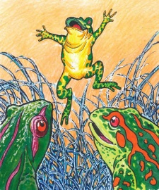

|
En tiempos remotos, en una zona de Moho estaba Mama Koili. Tenía un hijo joven, trabajador y cariñoso de nombre Huayna Luque y le decían con cariño “Luli”, así se llamaba el cholo, ¡era tan laborioso ¡que, en la época de siembra, sembró una chacra de papa, además era “araría” (Autoridad de la chacra). Una de esas noches, cuidándo la chacra en una “chujlla” (especie de carpa), que la construyó él mismo, cayó una granizada feroz y como es natural que después de las granizadas hace un frío intenso, obligó a “Luli” (joven) a acostarse. Sería la media noche cuando sintió que lo llamaban: Luli, Luli, alójame. Luli, vio a través de la luna una hermosa “Imilla” (era una joven sapa) con “ajnqo chuco” (vestido blanco) de jaspes verdes y amarillo. Su montera era extraña tanto la forma como el color. Lo más sorprendente eran sus dos hermosos ojos que fascinaba al mirar. Luli se enamoró perdidamente de la joven a quien hizo pasar a la “chujlla”. Le encantó ver el aseo de la “Imilla”, era tan limpia que despedía un olor agradable de agua y flores silvestres. El hombre le inquirió por su nombre, ella le respondió: mi nombre es Kailila. Le contó que era muy rica, dueña de muchas tierras, que solo por el frío pedía alojamiento, que también era la “Llajtayoc”. Por supuesto que pasaron una noche feliz transportando al quinto cielo de placer. En ese momento Luli era el hombre más dichoso de la tierra al poseer a Kailila. ¡Qué piel tan fina ¡como decía él, por la suavidad parecían los pétalos de las flores. Así transcurrieron muchas noches, pero lo extraño era que por las mañanas desaparecía la bella “Imilla” y solo regresaba por las tardes heladas y frías. Una de esas noches al acariciarle, notó el amante que las manos de Kailila eran raras, algo así como ramas de un arbusto seco y el chuco jaspeado era la piel de su espalda. Por supuesto que Luli guardó prudencia, pero al amanecer el día la atajó para seguirla examinando, entonces tuvieron lío, la joven empezó a gritar qauu qauu. El amante botó a la sapa y vio con horror que la tal mujer era una asquerosa animal que daba escalofríos al mirarla. Luli se fue donde sus padres a quien sólo dijo, que tenía miedo de seguir cuidando la chacra, imposible avisarle lo que sucedía. Como toda madre es cuidadosa. Mama keili se fue a la chujlla a echar de menos las cosas de su hijo. Al arreglar la cama dentro de las frazadas encontró un enorme sapo de repugnante estampa, horrorizada Mama Keili dijo: este jamp’ato es el que está chupando la sangre de mi hijo. Lo botó sobre un tiesto y le tiró una piedra, gracias que se introdujo a un agujero por lo que no pudo matarlo, solo lo hirió gravemente. Al regresar Luli, en la chujlla la encontró a Kailila con la cabeza amarrada con “qoras” (hierbas frescas) quejándose desesperadamente por el dolor. Le dijo: fíjate lo que me ha hecho tu madre, esa vieja mala fe me ha arrojado con una piedra, felizmente que me escapé, si no me mata. No creas que estos se va a quedar impune, tengo muchos parientes a quienes avisaré para que castiguen este crimen. Kailila estaba completamente desfigurada, el amante decepcionado se fue abandonándola para siempre. Al día siguiente Luli fue a botar unas llamas que estaban haciendo daño en la chacra. El cholo en vez de arrear las llamas empezó a dar vueltas en círculo meneando su látigo, como quien se defiende de un grupo de perros que los acometen. Los padres miraban riendo, creían que el “Wayna” (joven) jugaba. Cuando vieron que se tendió en el suelo sin poderse levantar corrieron a ver y los encontraron al hijo en agonías, rodeado de millares de sapos destrozados y otro tanto de vivos, que se retiraban después de haberlo envenenado con su baba ponzoñosa. Eran los parientes de la sapa Kailila que vengaban el crimen cometido por Mama Keili. Luli reprochó a su madre increpándole que ella tenía la culpa para que los sapos lo envenenen. Apenas terminó de referir sus amores con la sapa Kailila, falleció Luli. Los sapos que mató Luli fueron quemados, desde entonces en ese lugar ya no caían granizadas. (en la provincia de Moho en la zona de Sirulaya ) Los pobladores del Ayllu Jurinaya Ccollana hasta ahora acostumbran a quemar sapos vivos cuando amenaza caer granizada, y no es mentira, la granizada cambia de rumbo o desaparece, al practicar esta costumbre. Cuentan este mito de los amores de la sapa Kailila y Luli. |
